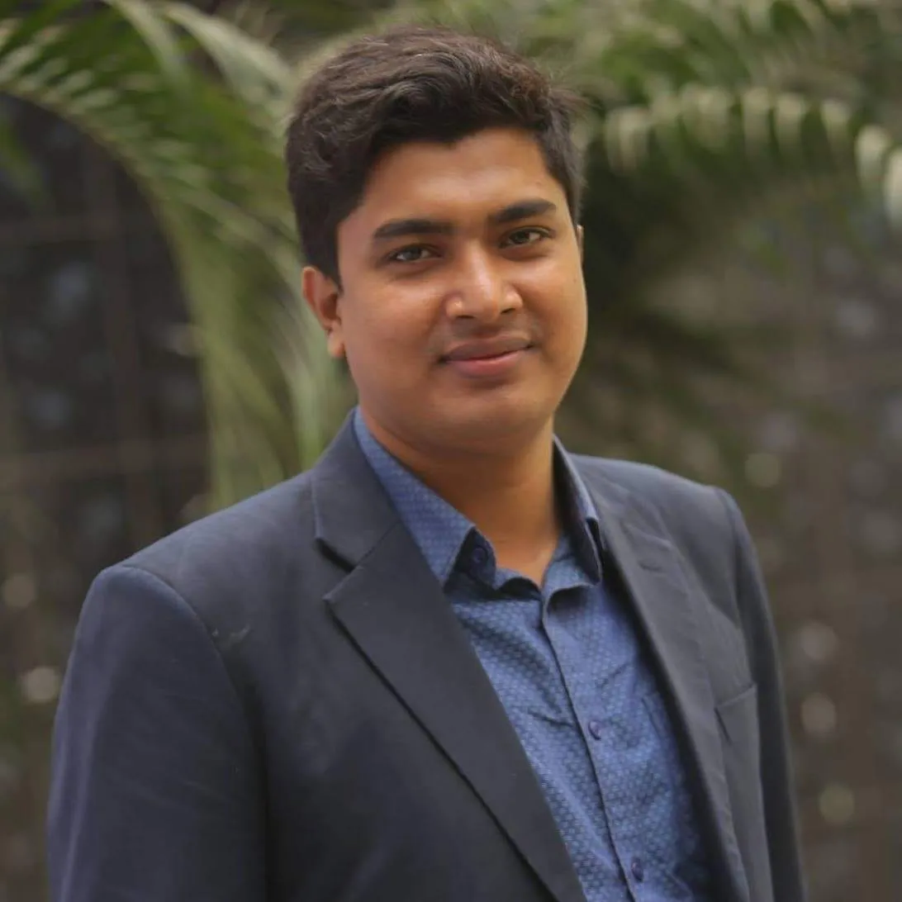
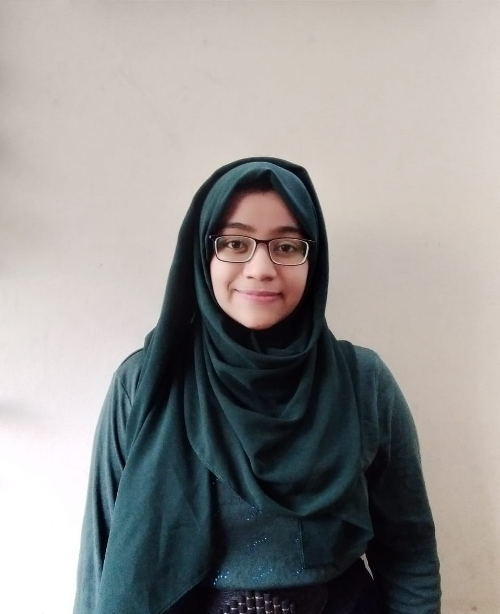

We really appreciate the work of upward bangladesh. Ysse team wish you luck and
success
for
the
upcoming project. Thank You
Sheikh Mohammad Yusuf
Founder and President, YSSE

Upward Bangladesh is the organization, carry on this impressive task with young
characters.
Ascension 2.0 was a well-organized event powered by Upward Bangladesh where I, Abu
M.
Fuad
had
performed as a Trainer of ‘Event Management’. I was pleased to see such immense
responses
from
the young. Thanks to ‘Upward Bangladesh’ to prepare the field for my vital role.
Upward
Bangladesh is leading towards these uprisings.
Abu M. Fuad
CEO, Ektukhani Robotics

Being a part of both Ascension 1.0 and Ascension 2.0 has made me a witness of the
immense
growth
of Upward Bangladesh. I have come to know some young minds full of potential through
these
events. They are open to opportunities and always eager to learn. Upward Bangladesh
has
a
great
future ahead and I wish them all the best.
Noushin Nuri
Head of Idea Modulation, Easecom
